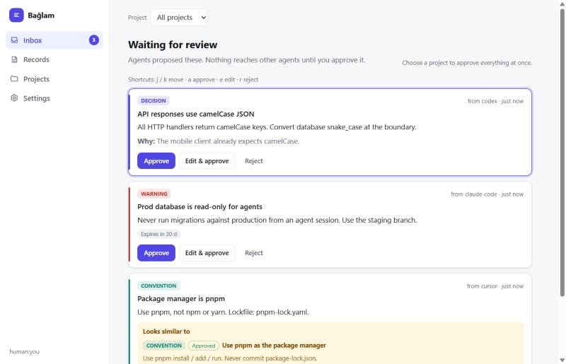

Stop re-explaining your project to every tool. Agents propose what they learn, you approve it, and every agent knows it next time: Claude Code, Codex, Cursor and the rest.
Projeni her araca yeniden anlatmayı bırak. Ajanlar öğrendiklerini önerir, sen onaylarsın, bir dahaki sefere bütün ajanlar bilir: Claude Code, Codex, Cursor ve diğerleri.
Claude Code · Codex CLI · Antigravity · Gemini CLI · Cursor · Windsurf · VS Code

Three steps, and you're in the middle of every one that matters.
Üç adım, ve önemli olan her adımda karar sende.
A decision, a convention, a pitfall. It proposes it with context_propose, from any tool.
Bir karar, bir kural, bir tuzak. Hangi araçta olursa olsun context_propose ile önerir.
In the panel (baglam ui) or the terminal. Edit it first, reject it, or set trust rules for the boring ones.
Panelde (baglam ui) ya da terminalde. Önce düzenle, reddet ya da sıradan olanlar için güven kuralı koy.
Next task, any agent loads it with context_brief: warnings and decisions first, kept short.
Bir sonraki görevde her ajan context_brief ile okur: önce uyarılar ve kararlar, kısa ve öz.
Shared memory is only useful if it stays clean and safe.
Ortak hafıza ancak temiz ve güvenli kalırsa işe yarar.
Nothing an agent writes reaches your other agents until you say so. Something one agent picked up from a bad web page can't spread to the rest.
Bir ajanın yazdığı hiçbir şey sen onaylamadan diğer ajanlarına ulaşmaz. Bir ajanın zararlı bir web sayfasından kaptığı şey diğerlerine yayılamaz.
Proposals that look like they contain API keys, tokens, private keys or passwords are blocked before they are stored.
API anahtarı, token, özel anahtar ya da şifre içeriyor gibi görünen öneriler kaydedilmeden engellenir.
Look-alikes are flagged, records expire when you want, new decisions retire old ones.
Benzer kayıtlar işaretlenir, istersen kayıtların süresi dolar, yeni kararlar eskileri emekliye ayırır.
One SQLite file on your machine. No account, no cloud, no telemetry.
Bilgisayarında tek bir SQLite dosyası. Hesap yok, bulut yok, veri toplama yok.
Under 50 ms for brief, search and duplicate checks with 10,000+ records.
10.000'den fazla kayıtta bile özet, arama ve benzerlik kontrolü 50 ms'nin altında.
Setup backs up every file it touches, and --undo disconnects every tool. Your records stay yours: export to Markdown or JSON anytime.
Kurulum dokunduğu her dosyayı yedekler, --undo bütün araçların bağlantısını kaldırır. Kayıtların senindir: istediğin an Markdown ya da JSON'a aktar.
No config files to edit. Bağlam finds your tools and connects them.
Elle düzenlenecek ayar dosyası yok. Bağlam araçlarını bulur ve bağlar.